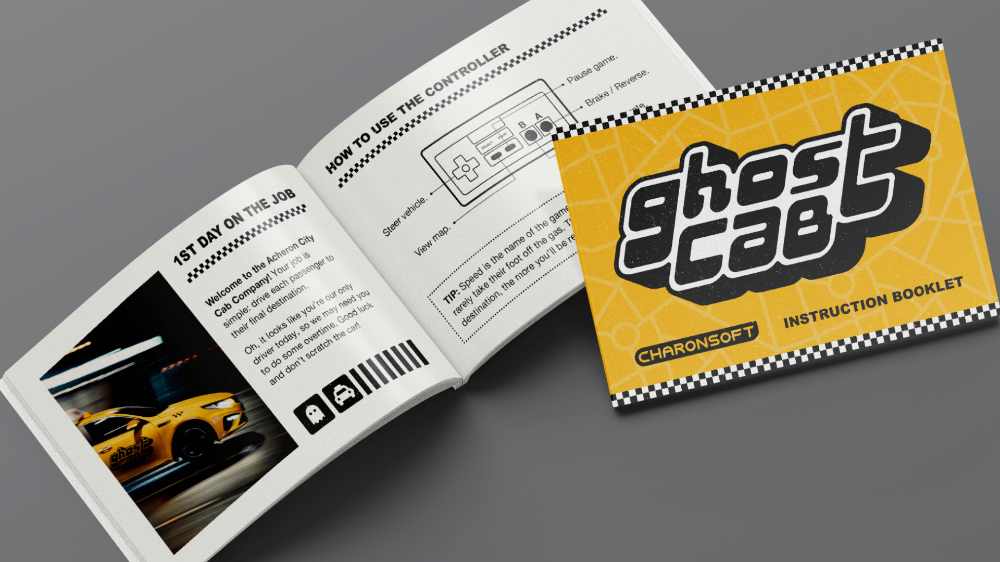
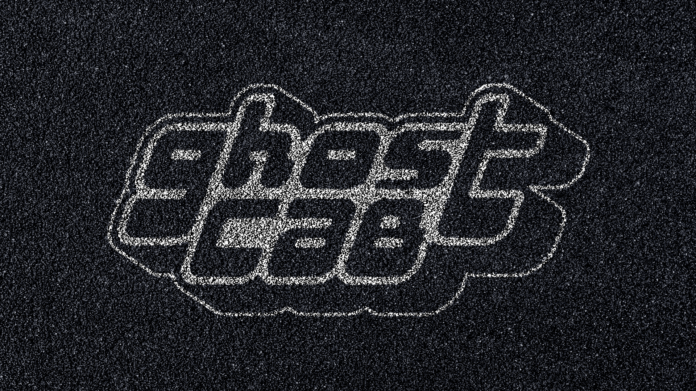
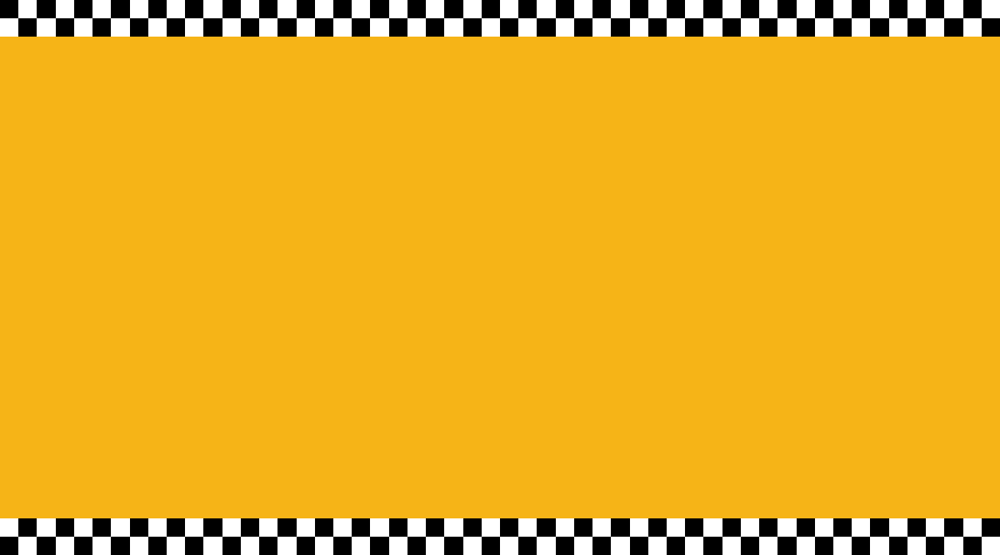

01. HOME — selected works → 02. ABOUT — more info → 03. RESOURCES — free downloads → 04. TWITTER — hot takes → 05. DRIBBBLE — more design → 06. LINKEDIN — business time →
I’m extremely excited to be participating in Famicase 2022! If you’re unfamiliar, Famicase is an annual exhibit in Tokyo that displays fan-made Famicom cartridges designed by people from all over the world. It’s an overlap of my two biggest interests: graphic design and retro video games. I’ve been following the exhibit for a long time and finally submitted a design this year:
GHOST CAB: Welcome to the Acheron City Cab Company! Your job is simple: drive each passenger to their final destination. It looks like you're our only driver today, so we may need you to do some overtime. Good luck and don't scratch the car!
READ MORE →



 This site is best viewed on a computer.
This site is best viewed on a computer.